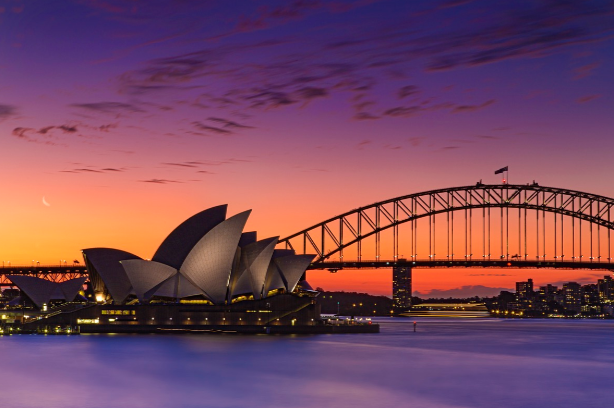

Australia
 Australia is world famous for its natural wonders and wide open spaces, its beaches, deserts, "the bush", and "the Outback".
Australia is one of the world's most highly urbanised countries. it is well known for the attractions of its large cities such as Sydney, Melbourne, Brisbane and Perth.
Australia is world famous for its natural wonders and wide open spaces, its beaches, deserts, "the bush", and "the Outback".
Australia is one of the world's most highly urbanised countries. it is well known for the attractions of its large cities such as Sydney, Melbourne, Brisbane and Perth.
Sydney is known as the Harbour City. It's the largest, oldest and most cosmopolitan city in Australia with an enviable reputation as one of the world's most beautiful and liveable cities. Brimming with history, nature, culture, art, fashion, cuisine, design, Sydney's set next to miles of ocean coastline and sandy surf beaches. Longterm immigration has led to the cities reputation as one of the most culturally and ethnically diverse cities in Australia and the world. The city is also home to the Sydney Opera House and the Sydney Harbour Bridge, two of the most iconic structures on this planet. Sydney is a major global city and one of the most important cities for finance in the Asia-Pacific. The city is surrounded by nature and national parks, which extend through the suburbs and right to the shores of the harbour. Sydney's 4,757,083 residents (according to a 2013 estimate) sprawl over an area of more than 12,350km². The timezone is identical with the majority of the state of New South Wales: GMT +10. The local timezone is AEST or Australian Eastern Standard Time. The city, as does the rest of the state, observes Daylight Savings time from October to April each year. Sydney became the centre of the world's attention in September 2000 when the city hosted the Summer Olympics - officially announced by the IOC Chairman at the closing Ceremony to be the "the best games ever"! The Olympics saw a major building and renovation program take hold of Sydney, positioning it as one of the great world cities of the 21st century. Sydney continues to attract and host large international events. |
Return to main